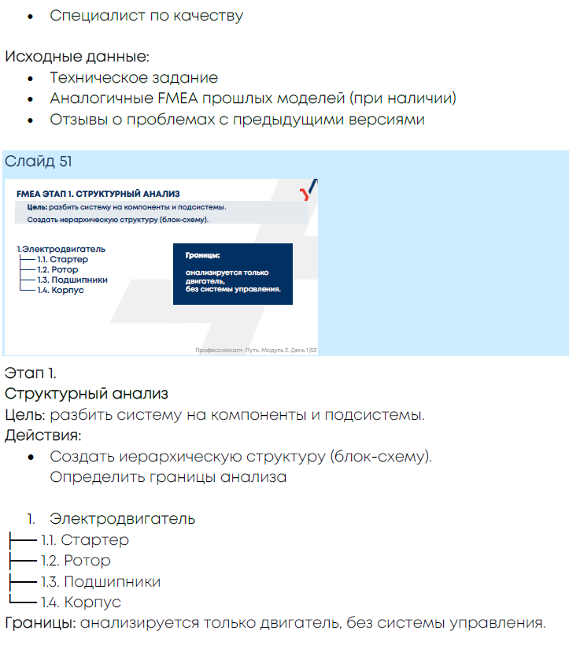

Алгоритм для ИИ-помощника
Готовый текст: сначала понять, потом сделать маленький тест, затем дождаться подтверждения и только после этого идти в полный прогон.
Открыть промпт →Есть сценарий в DOCX и презентация в PPTX? Дайте ИИ-помощнику этот алгоритм, покажите материалы и получите сценарий с номерами и скриншотами слайдов без ручной сверки 100+ страниц.
Все материалы из рабочей папки «Слайды в сценарий: алгоритм». Можно читать по отдельности или скачать архивом.
ИИ может помочь, но ему нельзя просто сказать «вставь слайды по порядку». В реальных материалах есть анимация, повторяющиеся заголовки, сдвиги и несколько слайдов на один фрагмент сценария. Алгоритм заставляет помощника сначала понять задачу, затем проверить небольшой блок и только потом переходить к полному файлу.
Главное правило: слабое соответствие не заполняется догадкой. Помощник оставляет место на проверку и объясняет, что именно не сошлось.
Работайте с копиями. В рабочих документах заранее обезличьте персональные и закрытые данные.
Готовый текст: сначала понять, потом сделать маленький тест, затем дождаться подтверждения и только после этого идти в полный прогон.
Открыть промпт →Почему используются Render → Match → Review → Insert → Validate и где автоматизация должна остановиться.
Читать разбор →После алгоритма приложите рабочие материалы и отправьте примерно такой запрос:
Прочитай алгоритм и приложенные сценарий DOCX и презентацию PPTX. Пока ничего не изменяй. Сначала: 1. Перескажи задачу своими словами. 2. Назови входы, ожидаемый результат и ограничения. 3. Скажи, какие места могут потребовать моего решения. 4. Предложи тестовый прогон на 5–10 фрагментах. После моего подтверждения обработай только тестовый блок. Не угадывай слабые соответствия и не изменяй исходные файлы.
Запусти агентов последовательно: каждый получает результат предыдущего, добавляет свой слой работы и не переписывает чужие решения молча.
Ниже — три страницы готового сценария из большой рабочей пары. На каждой странице уже стоят номера и встроены скриншоты слайдов: именно так преподаватель видит сценарий во время занятия.



Листай вправо. Пример взят из пары М2Д1: сценарий на 260 страниц и презентация на 272 слайда. На странице показывается только сценарий со встроенными слайдами; отдельные кадры презентации не публикуются.
Тестовый блок считается пройденным, если номера соответствуют содержанию, порядок не нарушен, скриншоты показывают нужные слайды, а спорные места явно вынесены на решение человека.
Скачать карту проверки →